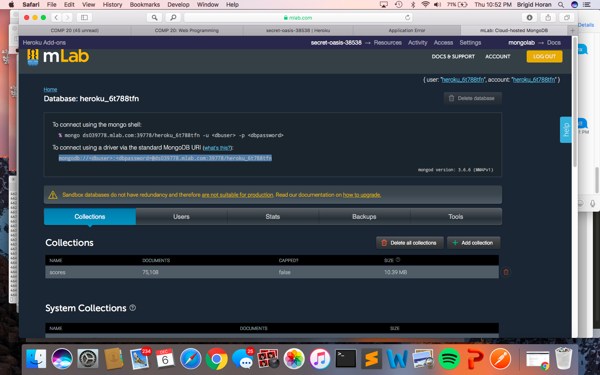
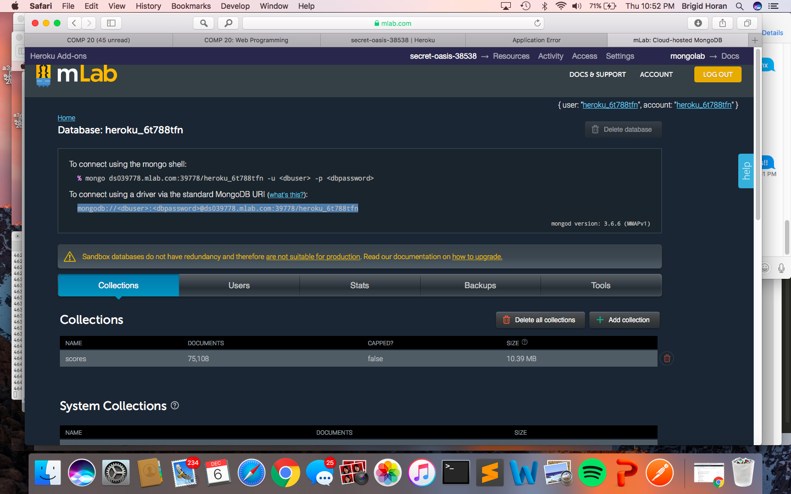

I was hired as a security consultant, to look for weaknesses in a potentially vunerable web application. The application is a game and game server, specifically the game 2048. I was primarily focused on exploiting the server that holds the score information. There are three routes for the server, a GET index, GET scores.json and POST submit.
Black Box Testing- I began with tests for simple things covered in class, without looking at the code: XSS using curl on the submit route and NoSQL injection attacks in the scores.json route by using the query operand [$ne]. The XSS attack was sucessful, but the injection was not, so I then viewed the code begin white box testing.
White Box Testing- Looking into the code didn't provide any immediately notable vunerabilities, like hardcoded passwords or bad coding practice. In fact, it just explained why my previous attempt at injection didnt work, since instead of using the find function on the collection to query for usernames, he used a filter function. However, I noticed that this app uses cors as a dependency. When looking into this, the default configuration of the cors dependency includes "origin" = "*", giving access-control-allow-origin power to any origin, since the asterisk is a wildcard. Additionally, by looking at the code I knew the server used a MongoDB database. Access to the Heroku app allowed me to go into mLab and check that this app uses the free version of MongoDB, which I decided to spam in an DDOS attack, or Distributed Denial of Service Attack. I used a bash script in terminal(s) to try to overwhelm the application, either through Heroku or MongoDB, as I wasn't sure what would break first.
Tools: curl, bash script
The main issues present in the app are Cross Site Scripting, Access-Control-Allow-Origin, and Distributed Denial of Service attacks. Cross Site Scripting allows users to enter potentially malicious content, altering the page, using JavaScript tags. Since Access-Control-Allow-Origin is not restricted at all, any webpage has access to the private information held on the server. Distributed Denial of Service consists of an overloaded server, crashing the app and preventing users from accessing it.
Found in index.js, in the POST submit path
Severity of issue: Medium. Allows attacker to hijack the page using JavaScript, allowing potentially malicious actions, such as redirecting the user to an undesired site, taking control of the 2048 site, or accessing cookies or local storage (if the application has them, although this app does not). However can be fixed relatively easily through character stripping.
Description of issue: Cross-Site Scripting is when user input uses JavaScript to trick the application into behaving differently. By using script tags in the username value, it allows editing of the original content
This can be found using curl, however would also work from the 2048 webpage, as either way the submit route does not strip characters.
An example of how to change the username would be to use curl --data "username= <"script">alert("Brigid");&score=79&grid={}" URL (without the quotes within the script tag, those are there to prevent this page from having an alert show up)

This can be resolved by validating the user input, and checking for concerning such as "<" or ">". They can be replaced with equilvant values, like & lt; or & gt; (without the space between & and letters).
Located in index.js/package.json, since uses the cors dependancy
Severity of issue: High. With a wildcard, this allows a web page to ignore the same origin policy, meaning it can access data from another webpage, allowing a potentially malicious script gain access to sensitive information on the other web page using the Document Object Model
The server uses the default version of cors and was unedited to only accept requests from verified origins.


This could be fixed by changing the origin from a wildcard (*), to just allowing submits from the 2048 game server.
Located in the Heroku app, used POST submit to overwhelm Heroku. Checked progress with mLab interface in MongoDB
Severity of issue: Low/Medium. Although this can happen to any server or app, measures can be taken to limit requests over a certain amount of time, or by IP address
Found within heroku or mLab (Heroku broke first). Any server or database will have an upper limit of requests it can handle, and will stop responding when overloaded. I overloaded it using a bash script, by continuously running requests from terminal


 


This can be resolved by limiting requests using an API Key, requiring users to obtain information in a way that limits the requests it handles at a time.
Overall, this app requires updates to increase its security. By only allowing selective access using Cross Origin Resource Sharing, the page can become more secure. Verifying User input and stripping script tags can prevent the manipulation of the page with XSS. Server limits can be put in place by using an API key to help regulate user requests and prevent overloads. Also, by upgrading services, like the version of MongDB, the application database could handle more volume, although this would cost money, and perhaps be more exepensive than it is worth depending on the plan chosen.